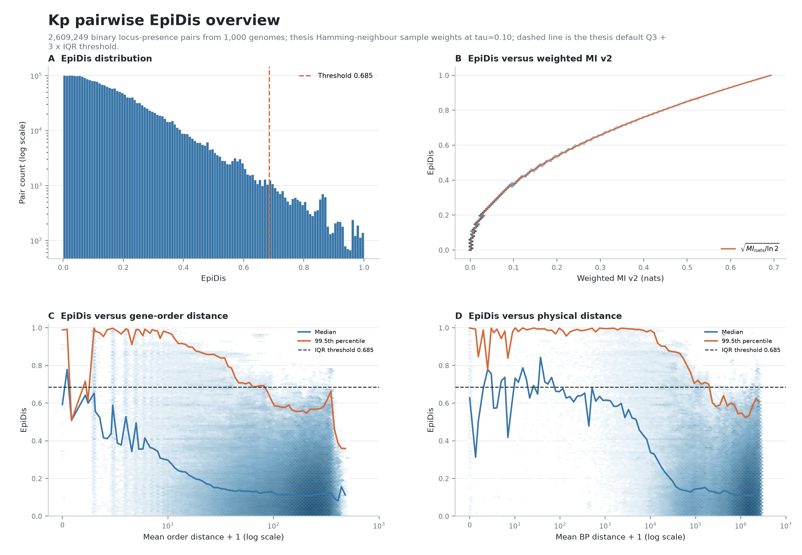
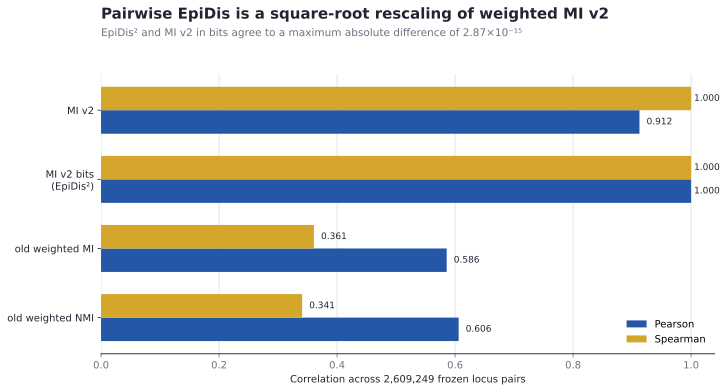
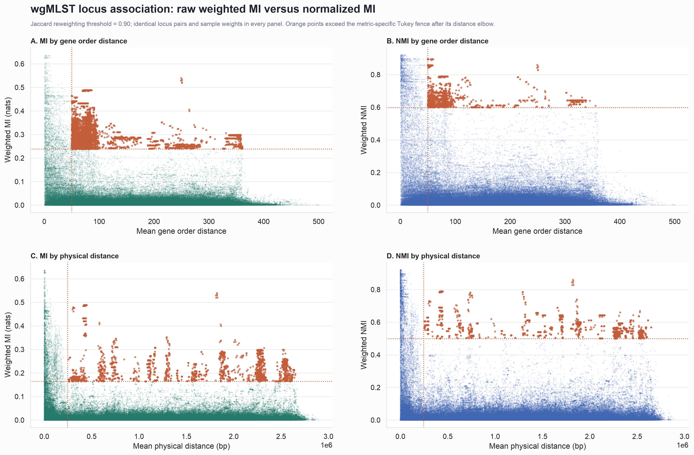
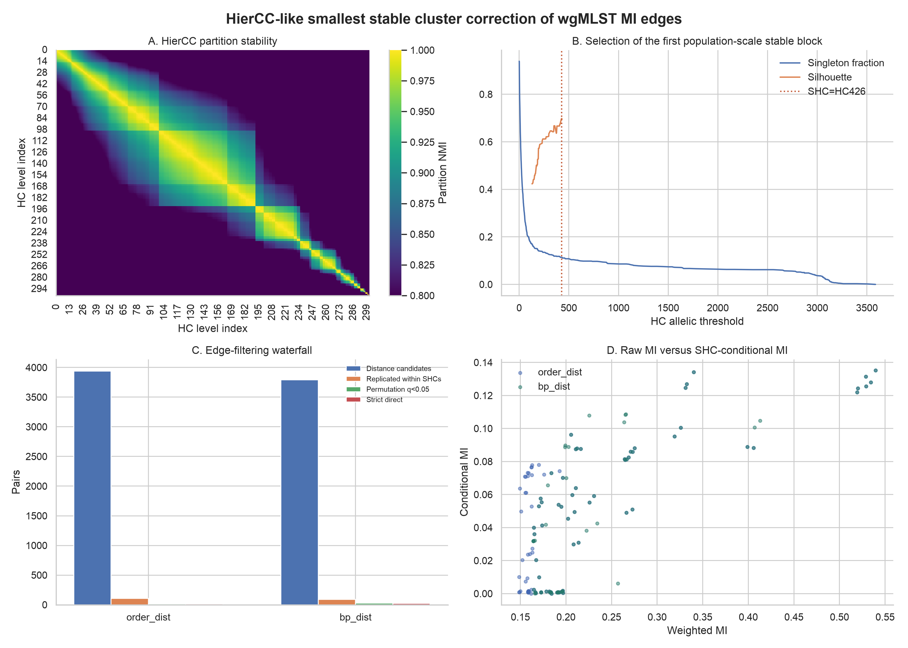
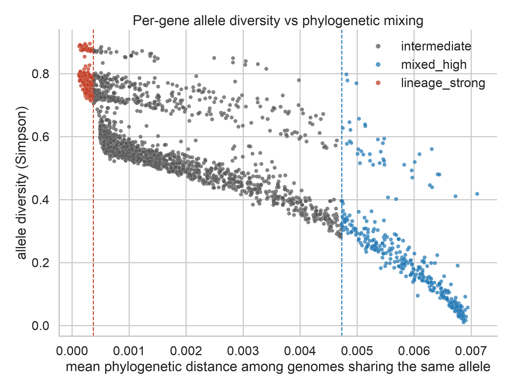
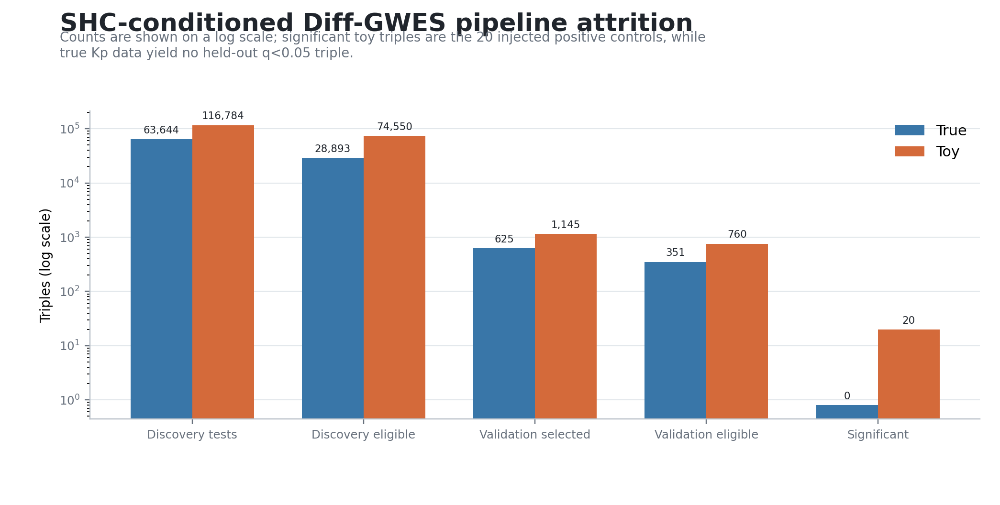
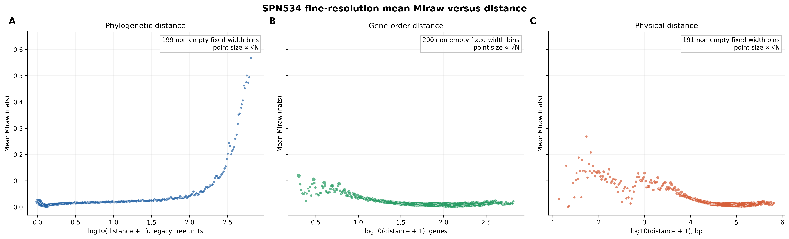

Fast kernels
Dense weighted joint matrices and Numba-parallel multiallelic pair scans replace one-task-per-pair Python loops.
RESEARCH PREVIEW
Fast locus-level information kernels, explicit physical-linkage diagnostics, SHC-preserving inference, and a held-out high-order extension.
PAIRWISE RESULTS

FROZEN EVIDENCE
The frozen implementation verifies the exact identity between squared EpiDis and weighted MI in bits.






SOFTWARE
Dense weighted joint matrices and Numba-parallel multiallelic pair scans replace one-task-per-pair Python loops.
State semantics, score definitions, thresholds, provenance and integrity hashes are machine readable.
Installable package, CLI, CI, deterministic figures and structured documentation.
python -m pip install -e ".[test]"
pytest
cinch-dev2 verify
cinch-dev2 listINTERPRETATION BOUNDARY
It is not, by itself, molecular epistasis, fitness interaction, causality, functional cooperation, or ecological competition. Physical linkage, lineage structure, multiple testing and network redundancy are different questions and remain different outputs.